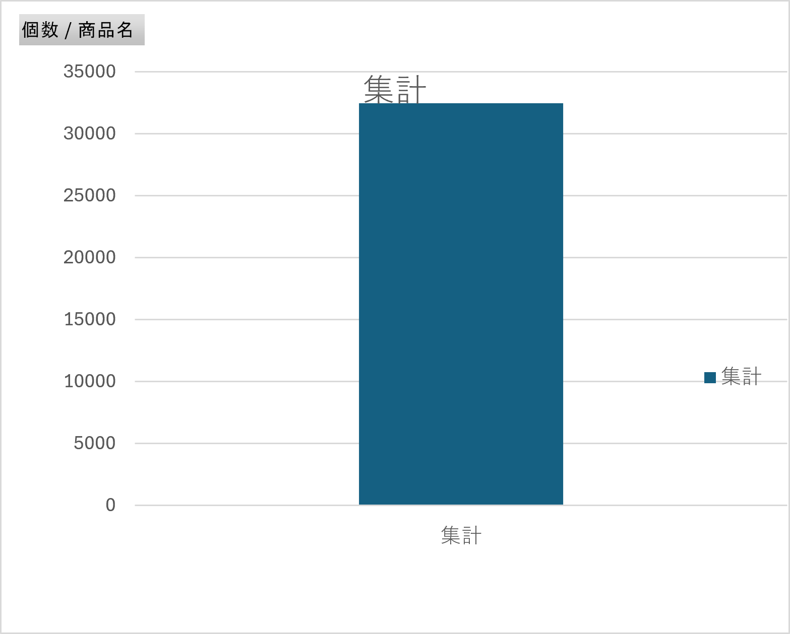
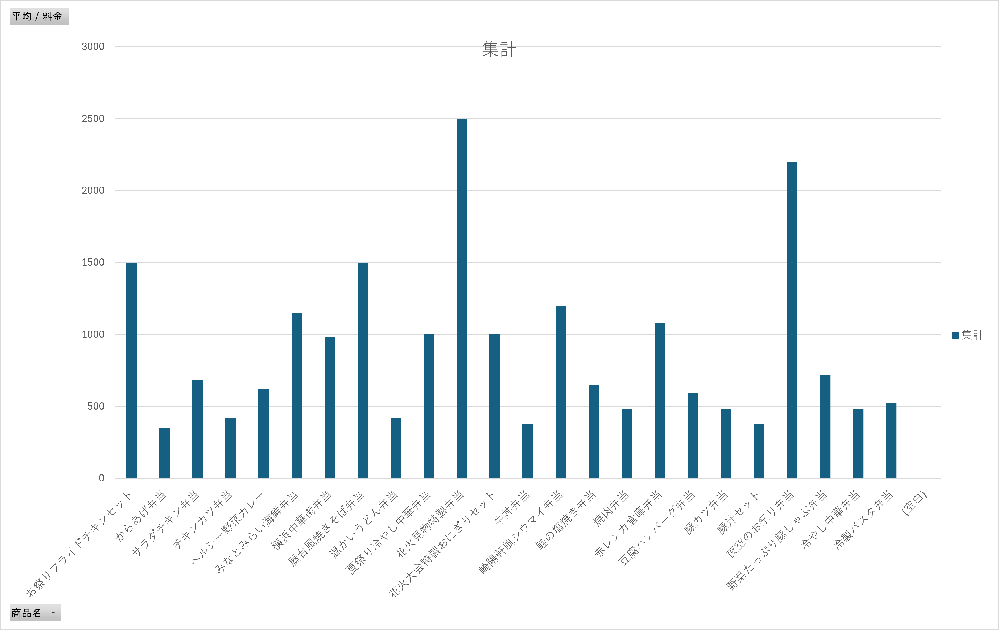
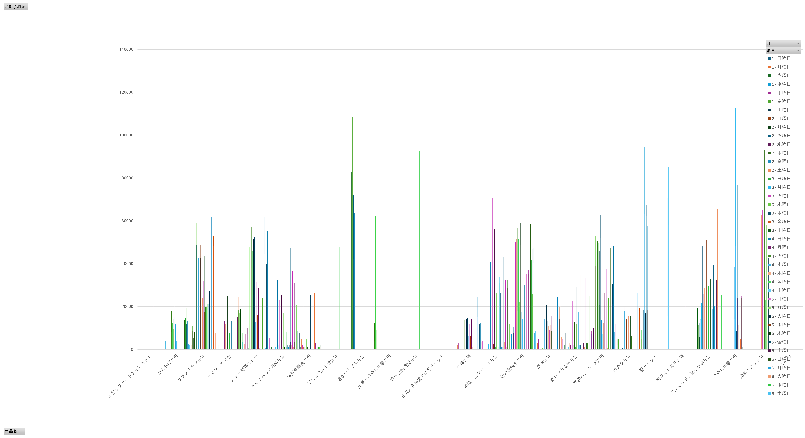
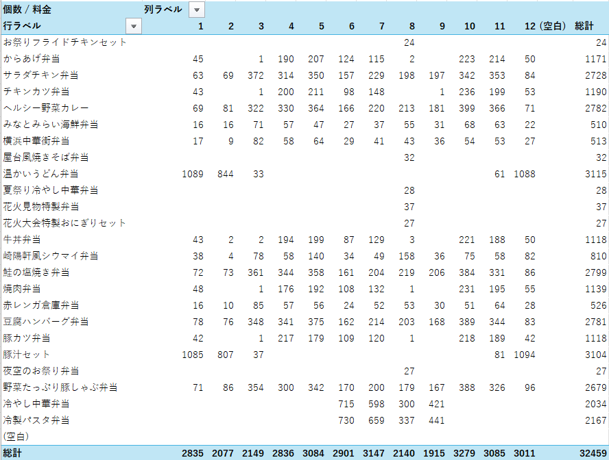
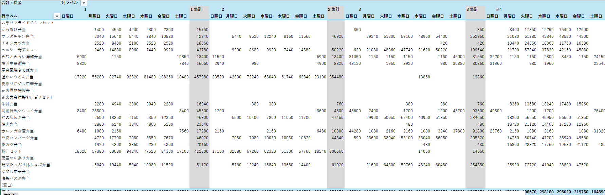
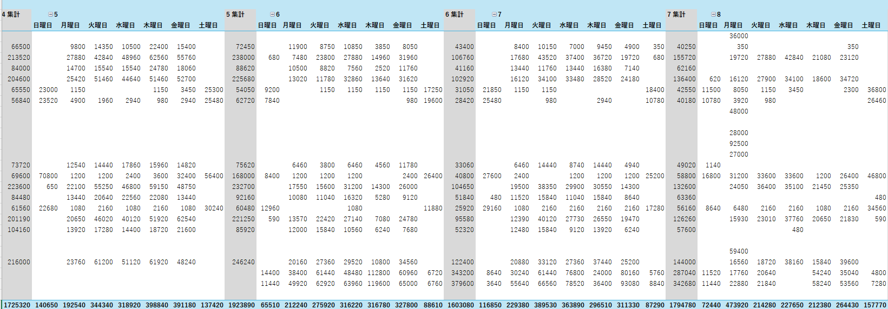
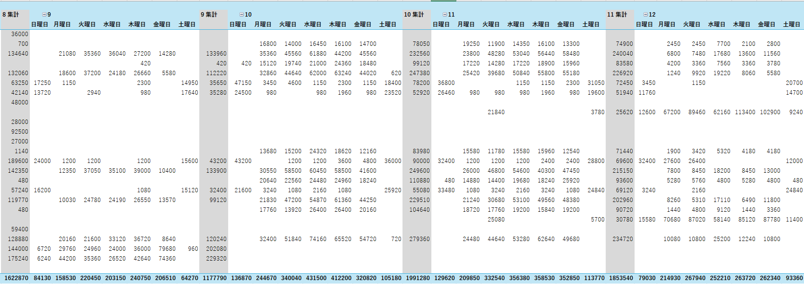
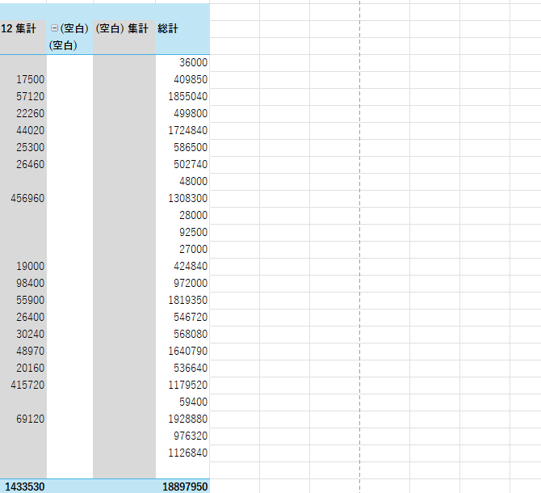

今回の分析では、データを基にこのお弁当屋はどういった時期にどのような商品を販売しているかを明らかにする。 そこから販売促進方法や各商品の売れ行きなどを探る。
時期と商品の関係性について

このグラフから、2024/1/1~2024/12/31までで、このお弁当屋は32459食販売したことが分かる。
このグラフから、温かいうどんと豚汁セットの売れ行きがいいことが分かることが分かる。 また、お祭り～花火大会～弁当は全体的にみて売れ行きが少ない傾向にある。

このグラフから、花火見物特製弁当の値段が一番高い（2250）からあげ弁当の値段が一番安い （350）ことが分かる。 販売数が多いものは比較的安価だということもわかる。


みなとみらい海鮮弁当と横浜中華街弁当、赤レンガ倉庫弁当は年中コンスタントに販売しているのにもかかわらず、売れ行きが比較的に低い。 花火大会～お祭り～お弁当は、8月にしか売れていないため、この店は確実に限定販売をしていることが分かる。また、いちばん売れ行きが良かったうどんと豚汁は 冬に限定的に販売している。しかし、年間を通していちばん売れ行きがあると分かる。




このグラフからわかることは、土日では販売が伸びているイメージがあまり持てない。 また、週の真ん中になるにつれて売れ行きが伸び、週末にかけて減少していることが分かる。
休日ではなく平日に売れ行きが伸びていたり、販売されているものが手ごろに食べられる商品が多いことが分かった。 このことから、このお弁当屋はビル街に設置されており、ビジネスマンを対象として販売していると思われる。 また、お祭り弁当やうどんなどの限定販売を通して、ビジネスマン以外の人も対象にしていると分かった。